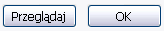
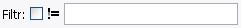
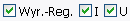
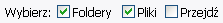
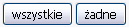

Kliknij na nie! Jeśli są podświetlone (pokolorowane zgodnie z ustawieniami motywu twojego systemu) oznacza to że są zaznaczone.
Zakładka Przebieracz jest używana do wybierania plików lub folderów, którym zostaną zmienione nazwy.
By zaznaczyć lub odznaczyć elementy:
Kliknij na nie! Jeśli są podświetlone (pokolorowane zgodnie z ustawieniami motywu twojego systemu) oznacza to że są zaznaczone.

Użyj przycisku Przeglądaj by otworzyć okno wyboru folderu.
Użyj przycisku OK jeśli wkleiłeś lub wpisałeś katalog.
W obu przypadkach zawartość folderu zostanie wyświetlona w obszarze wyboru.

Filtrowanie umożliwia wyświetlenie wyłącznie elementów, które są w kręgu twojego zainteresowania, sprawiając wybór łatwiejszym.
Tylko elementy zawierające tekst wpisany do pola tekstowego Filtr zostaną pokazane. By zobaczyć typy plików użyj '.', np. '.jpg' wyświetli wyłącznie pliki obrazów jpeg.
Modyfikator != (nie równy) jest modyfikatorem negatywnym, innymi słowy jeśli zostało to zaznaczone wyświetlone zostaną wyłącznie elementy, które NIE zawierają Filtra.

Możesz również filtrować używając wyrażeń regularnych.

Po zaznaczeniu Foldery wyświetlane są wszystkie podfoldery znajdujące się w folderze, który wybrałeś.
Po zaznaczeniu Pliki wyświetlane są wszystkie pliki znajdujące się w folderze, który wybrałeś.
Zaznaczenie Przejdź spowoduje wybranie wszystkich plików we wszystkich podfolderach. Więc jeśli wybierzesz folder główny dysku (jak c:\), wszystkie pliki na tym dysku będą miały zmienione nazwy. Jednakże nie będziesz w stanie zmienić nazw folderów.

Zamiast siedzieć i pojedynczo zaznaczać wszystkie lub żadne elementy daję ci te dwa zmyślne przyciski.